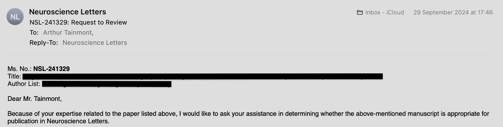

Table of contents
- Engineering
- Scientific research
- Startup experience
- Other activities
- Languages and early education
- Hobbies
Engineering
-
Campus 19, part of Network 42 Paris. Jul 2019 — Present Brussels, Belgium - Bachelor degree with title ‘IT solutions designer and developer’ and option ‘Web and mobile application development’
- Expected for the 10 August.
- Current state of achieved requirements:

- More information about the degree.
- Bachelor degree with title ‘IT solutions designer and developer’ and option ‘Applicative software development’
- Expected for the 10 August.
- Current state of achieved requirements:

- More information about the degree.
- Master degree with title ‘IT architecture expert’ and option ‘Data and database architecture’
- Expected for the 02 September.
- Current state of achieved requirements:

- More information about the degree.
- I will probably be the first student to complete the bachelor and master program at Campus 19 out of 500+ students.
- See all the school related coding projects who are found on my github.
- Bachelor degree with title ‘IT solutions designer and developer’ and option ‘Web and mobile application development’
-
Personal engineering projects Mars 2020 — Ongoing - Personal engineering projects mainly use programming to create for example:
- A profitable trading-bot.
- Web-scrapers to find appointments once available.
- Biological simulations.
- Electronic’s project using Arduino to create a mushroom-growing-system.
- Neural network and statistics library.
- Small games.
- Utilities for work.
- Personal utilities.
- Creation of study resources.
- Unit-tests for automatic evaluation of school projects.
- See all the personal coding projects who are found on my github.
- Personal engineering projects mainly use programming to create for example:
-
AWS cloud May 2024 — July 2024 - AWS Certified Cloud Practitioner
- Credly badge.
- Certificate:
- Exam score:
- AWS Certified Machine Learning - Specialty
- Credly badge.
- Certificate:
- Exam score:
- AWS Certified Cloud Practitioner
-
Natural Language Processing - a DeepLearning.AI Specialization January 2024 — April 2024 and April 2025 — May 2025 - Certificate:
Scientific research
-
Publication in Brain Science Advances October 2023 — April 2025 - My scientific article will be published in June.
- Acceptance for publication notification:

-
Review for Elsevier Neuroscience Letters October 2024 - See on my ORCID profile.
- Certificate:
- Elsevier asked me to do the review:
Startup experience
-
Founding startup: Lowinsulin Apr 2018 — Jan 2019 - Lowinsulin helps type 2 diabetics reverse their disease and reduce medication costs by receiving dietary guidance while being under the medical supervision of their own physician for remote medication adjustments on a day-to-day basis.
- I took the time for the creation of a web-platform providing the dietary guidance and remote physician connection for medication adjustments.
-
Founder Institute (Startup Incubator) with Lowinsulin Jan 2019 — May 2019 Luxembourg City, Luxembourg - We started off with 193 participants, and after progressive exclusion, ended with 10 graduating participants, including myself.
- Learned a lot about startup creation process, from marketing, legal administration, finance, hiring, management to product development and scaling.
- End of the program at week 14 image:

-
Birdhouse (Startup Accelerator) with Lowinsulin May 2019 Antwerpen, Belgium - Started with 650 startups, lowinsulin stayed until third round with 70 startups. Not selected in fourth round because too early for accelerator, saw potential and invited to come back next selection process. Image:

- Even after collecting 12 B2B LOIs, resulting in a reach of 7-7.5k type 2 diabetics, due to my lack of technical skills and young age, I ended up letting go of this startup to study at campus 19 instead.
- Started with 650 startups, lowinsulin stayed until third round with 70 startups. Not selected in fourth round because too early for accelerator, saw potential and invited to come back next selection process. Image:
-
Co-founding startup: Waffly Mar 2021 — May 2021 Leuven, Belgium - Waffly rethinks the easy product a waffle is by alternating its ingredients into local, sustainable ingredients and offering work opportunities to people in disadvantaged situations.
- I joined, as leading ICT, what would become a team of 9. I learned more about team-work and business next to creating the digital marketplace.
-
Enactus national expo 2021 (Startups competition) with Waffly May 2021 Leuven, Belgium - Waffly took the second place at this national, Belgian universities’ startup competition.
Other activities
-
Selling Shopify webshops and Wordpress websites. Sep 2017 — Dec 2017 - Making 25-50 euro an hour at 17 years of age.
- My first website was trending and ranked top 2 on the Shopify Exchange marketplace.
- Gained experience in design, sales, digital marketing.
-
CAE aviation school entry exam preparation Jan 2018 — Mar 2018 - CAE aviation school entry exam preparation. Even if it was interesting at the start I did not continue on this track professionally as I concluded pilot to be too monotone of a career for me.
-
Worked as a volunteer for AI4Belgium Dec 2020 — Mar 2021 - I contributed to the first database of Belgian AI companies and helped organize the 2021 Belgian AI Week by working on the digital platform.
- Self-learning various fields out of instinctive curiosity and creating an unpublished digital garden with obsidian.
- In depth self-learning various aspects of neuropsychology, psychopharmacology, psychiatry, neuroscience. But also interested in genetics, general health and medicine.
- A lot of other subjects are superficially covered in my digital garden.
Languages and early education
- Early education:
-
High school diploma: Onze Lieve Vrouw instituut Sep 2011 — Jun 2017 Sint-Genesius-Rode, Belgium -
Certificate of primary education: GBS de schakel Sep 2005 — Jun 2011 Linkebeek, Belgium
-
- Languages:
- French
- English
- Dutch
Hobbies
- Judo.
- Weight lifting and calisthenics.
- Sauna and outside walks.
- Learn by reading or ideate and subsequently take notes in the obsidian software.